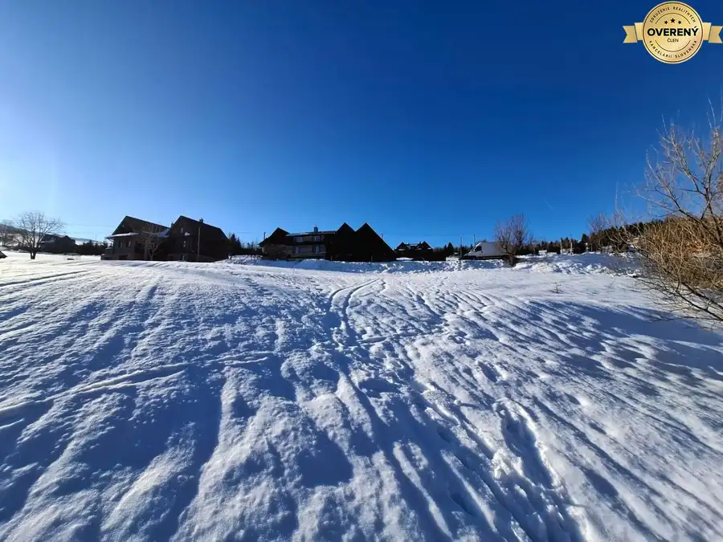
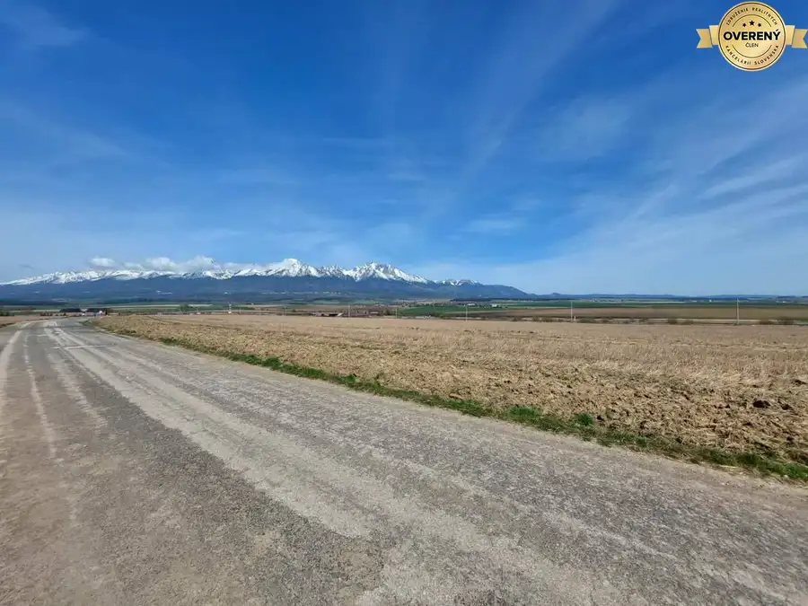

Nadčasový 5-izbový rodinný dom vo Veľkom Slavkove
Veľký Slavkov
- Plocha160 m²
- Stavpôvodný
O nehnuteľnosti
Ponúkame na predaj nadčasový, precízne riešený 5-izbový rodinný dom situovaný v tichej a vyhľadávanej časti obce Veľký Slavkov, v tesnej blízkosti Vysokých Tatier.
Tento výnimočný dom spája kúzlo pôvodnej stavby z roku 2014 s moderným komfortom nedávnej prístavby. Je ideálnou voľbou pre rodinu, ktorá hľadá veľkorysý životný priestor, prémiové materiály, nadštandardné súkromie a kompletne dokončený, upravený exteriér.
ZÁKLADNÉ ÚDAJE:
-
Lokalita:
Veľký Slavkov (tichá časť, dom je výrazne odsadený od hlavnej cesty pre maximálne súkromie)
-
Úžitková plocha domu:
cca 160 m² + plocha zimnej záhrady, terasy a skladu
-
Veľkosť pozemku:
991 m² (kompletne upravený a oplotený)
-
Počet izieb:
5 izieb + zimná záhrada + terasa + sklad
DISPOZIČNÉ RIEŠENIE A PRIESTOR:
Dom disponuje skvelou a praktickou úžitkovou plochou
cca 160 m²
, ktorá ponúka dostatok miesta a komfortu aj pre viacčlennú rodinu.
-
Prízemie / Denná časť:
Vstupná chodba, priestranná obývacia izba prepojená s kuchyňou, samostatné izby, sociálne zariadenia a praktický sklad. Hlavná spálňa disponuje vlastnou kúpeľňou.
-
Exteriérové prepojenie:
Z domu je plynulý výstup na vonkajšiu terasu. Výhodou je aj sklad (ideálny na odkladanie záhradnej techniky, bicyklov či sezónnych vecí).
-
Zimná záhrada:
Skvostom domu je presklená zimná záhrada, ktorá rozširuje obytnú plochu a slúži ako ideálne miesto na relax, rannú kávu alebo rodinné posedenia počas celého roka bez ohľadu na počasie.
-
Podkrovie:
Vo vrchnej časti (pod strechou) sa nachádza menšia, šikovne využitá miestnosť, ktorá momentálne slúži ako samostatný šatník / šatníková izba.
INTERIÉR – Klasika, ktorá nestarne:
Vnútro domu vás očarí svojou čistotou a útulnosťou. Interiér je ladený do príjemného, elegantného štýlu – nie je extravagantný, vsádza na overenú, nadčasovú klasiku, no zároveň pôsobí moderne. Pri realizácii interiéru boli použité kvalitné materiály s dôrazom na detail a dlhú životnosť.
EXTERIÉR A POZEMOK:
Pozemok s veľkorysou výmerou
991 m²
prešiel kompletnou profesionálnou úpravou a poskytuje dokonalé zázemie pre rodinný život:
-
Závlahový systém:
Udržiavaný zelený trávnik s automatickou závlahou.
-
Parkovanie:
Pohodlné parkovanie zabezpečuje pevný prístrešok pre 2 autá priamo na pozemku.
LOKALITA:
Obec Veľký Slavkov patrí medzi najobľúbenejšie podtatranské lokality vďaka skvelej infraštruktúre a vynikajúcej dopravnej dostupnosti do Popradu (iba pár minút autom) a priamo do Starého Smokovca či Tatranskej Lomnice. Dom sa nachádza mimo hlavného ťahu, čo novým majiteľom garantuje absolútny pokoj a bezpečie.
CENA:
Info o cene v RK
Parametre
| Rozloha pozemku | 991 m² |
|---|---|
| Zastavaná plocha | 1 m² |
| Úžitková plocha | 160 m² |
| Poschodie | neuvedené |
| Počet poschodí | 1 |
| Stav | pôvodný |
| Voda | verejný vodovod |
| El. napätie | 230V |
| Plyn | áno |
| Kanalizácia | áno |
| Kúpeľňa | áno |
| Vykurovanie | áno |
| Balkón | nie |
| Lódžia | nie |
| Terasa | áno |
| Garáž | nie |
| Parkovanie | áno |
| Postavené z | Zmiešané |
| Energetický certifikát | nie |
| Terén | rovina |
| Dátum zverejnenia | 20. 6. 2026 |
Kde to je
Mohlo by Vás zaujímať

Pozemok5 Cena dohodouInvestičný pozemok pri Ski Bachledka (600 m): riešený prístup a siete Ždiar 932 m² Ponúkame na predaj zaujímavý pozemok situovaný v obci Ždiar , v údolí medzi Belianskymi Tatrami a Spišskou Magurou. K pozemku patrí aj vlastná…
Pozemok8 105 530 €Investičné pozemky na predaj v lokalite Turnička, Poprad-Veľká Poprad 5025.25 m² Pozemky sa nachádzajú vedľa seba a predávajú sa ako celok , prípadne je tu možná dohoda. Celková výmera: 5025,25 m² Dané parcely sú aktuálne…